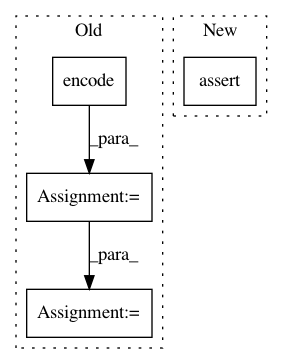

a04fdeac1f3d7ad8f0e49393bb48e090c124ef99,nilearn/datasets/tests/test_atlas.py,,test_fetch_atlas_talairach,#Any#,497
Before Change
@with_setup(tst.setup_tmpdata, tst.teardown_tmpdata)
def test_fetch_atlas_talairach(data_dir=tst.tmpdir):
extensions = nibabel.nifti1.Nifti1Extensions([
nibabel.nifti1.Nifti1Extension(
"afni", "*.background\nbrain.diagonal".encode("utf-8"))
])
fake = nibabel.Nifti1Image(
np.asarray([0, 1]).reshape(1, 2, 1),
np.eye(4),
nibabel.Nifti1Header(extensions=extensions))
os.makedirs(os.path.join(tst.tmpdir, "talairach_atlas"))
fake.to_filename(
os.path.join(tst.tmpdir, "talairach_atlas", "talairach.nii"))
talairach = atlas.fetch_atlas_talairach(data_dir=tst.tmpdir)
After Change
assert_array_equal(talairach.maps.get_data().ravel(),
level_values.T.ravel())
talairach = atlas.fetch_atlas_talairach("ba", data_dir=tst.tmpdir)
assert_array_equal(talairach.maps.get_data().ravel(),
level_values.ravel())
assert_raises(ValueError, atlas.fetch_atlas_talairach, "bad_level")
In pattern: SUPERPATTERN
Frequency: 3
Non-data size: 4
Instances
Project Name: nilearn/nilearn
Commit Name: a04fdeac1f3d7ad8f0e49393bb48e090c124ef99
Time: 2017-11-17
Author: jerome@dockes.org
File Name: nilearn/datasets/tests/test_atlas.py
Class Name:
Method Name: test_fetch_atlas_talairach
Project Name: PetrochukM/PyTorch-NLP
Commit Name: 0efd59ac0f70042e50c01b46c1d4edd463f1728c
Time: 2020-07-03
Author: petrochukm@gmail.com
File Name: tests/encoders/text/test_subword_encoder.py
Class Name: TestSubwordEncoder
Method Name: test_sos
Project Name: PetrochukM/PyTorch-NLP
Commit Name: 0efd59ac0f70042e50c01b46c1d4edd463f1728c
Time: 2020-07-03
Author: petrochukm@gmail.com
File Name: tests/encoders/text/test_subword_encoder.py
Class Name: TestSubwordEncoder
Method Name: test_eos